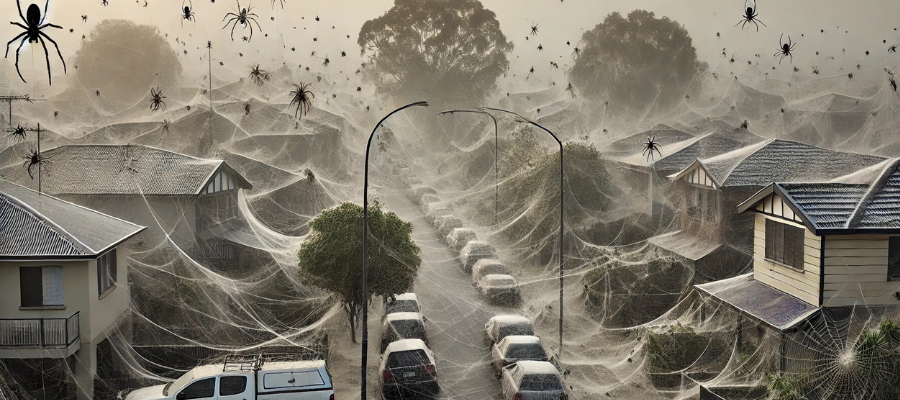

Invasão de aranhas na Austrália: milhares de aranhas criam cenário assustador em várias cidades
Nas últimas semanas, uma onda incomum de aranhas tomou conta de diversas cidades na Austrália, alarmando
moradores e especialistas. A invasão, considerada uma das maiores dos últimos anos, já impactou áreas
rurais e urbanas, causando apreensão e transformando o cotidiano dos australianos.
O fenômeno, que começou a ser notado no estado de Victoria e se espalhou por outras regiões, é composto
por várias espécies de aranhas, incluindo algumas das mais venenosas do país, como as temidas
aranhas-de-teia-de-funil e as armadeiras. Embora a maioria das aranhas observadas sejam inofensivas, a
quantidade de aranhas e a proliferação de teias em ruas, fachadas de casas e parques têm gerado
desconforto e dificuldades para a população.
“Em muitos lugares, as teias cobrem o chão como um manto branco, deixando um aspecto assustador em
árvores, cercas e até mesmo em veículos”, relatou a bióloga Sarah Jenkins, especialista em aracnídeos.
Segundo ela, a manifestação pode ser uma resposta a mudanças climáticas ou a um desequilíbrio ambiental
que está favorecendo a multiplicação dos aracnídeos.
Moradores de algumas cidades relataram dificuldades para sair de casa devido ao acúmulo de aranhas nas
portas e janelas. As autoridades locais estão recomendando que as pessoas evitem áreas onde há grandes
concentrações de teias e, em caso de picada, procurem imediatamente um centro médico.
Especialistas estão sendo acionados para investigar o motivo do aumento na população de aranhas e para
orientar medidas de controle. Segundo o departamento de saúde local, o uso de repelentes e a vedação de
janelas e portas podem ajudar a evitar que as aranhas invadam os interiores das residências.
Enquanto isso, a visão de campos e prédios cobertos por uma camada de teias continua atraindo a atenção
de curiosos e assustando moradores locais, que aguardam ansiosamente uma solução para essa “onda de oito
patas”.
